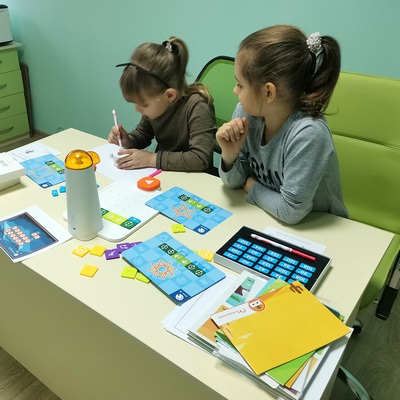
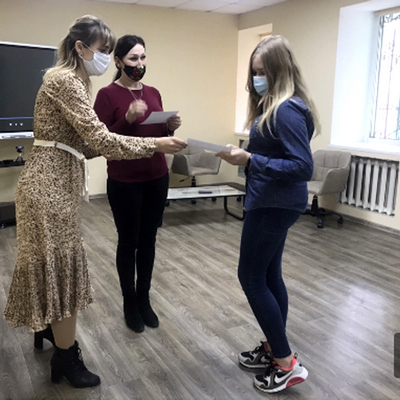
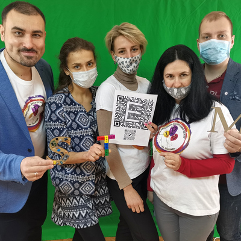
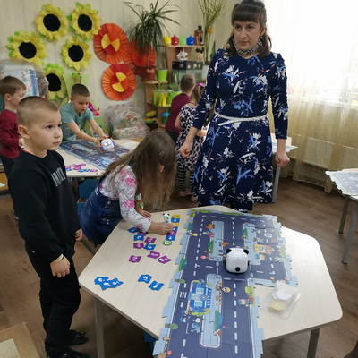

Центр STEAM – освіти
забезпечує всіма необхідними ресурсами гурткову та факультативну роботу; створює умови для STEAM навчання та підвищення кваліфікації вчителів міста та керівників гуртків; організовує тренінги, семінари, фестивалі та культурно-просвітницькі заходи щодо популяризації STEAM-освіти.

Science
До будь-якої проблеми потрібно підходити з наукової точки зору, аналізувати, шукати подібності та на основі цього генерувати ідеї майбутнього.
Technology
Активна життєдіяльність в новому технологічному світі неможлива без уміння застосовувати технології та формувати алгоритми вирішення практичних задач.
Engineering
Якісне створення об’єктів потребує проходження етапу моделювання, обрахунку ймовірних результатів та прототипування, заснованих на законах фізики.
Art
Успіх та популярність створеного продукту залежить від його ергономічності, юзабіліті та дизайну, що можливе лише в результаті творчого, мистецького підходу.
Mathematics
Точність в обчисленнях, обрахунках ресурсів та витрат це єдиний шлях до успішного вирішення поставленої задачі та створення нового рентабельного продукту.
Наша діяльність
Ваша дитина захоплюється новітніми технологіями, 3D графікою, робототехнікою, програмуванням, мейкерством та винахідництвом – приводьте її у Центр STEAM-освіти і ми зробимо все, щоби вона отримала навички і компетенції, з якими вона стане успішною в майбутньому технологічному світі.
-

Академія професій майбутнього
пропонує дітям 6-15 років зануритися у світ програмування та робототехніки
-

Пленерні уроки “Назустріч весни”
Діти на свіжому повітрі спостерігають за природою, а віртуальна та доповнена реальність далє можливість поринути у світ її пробудження: від формування бутонів до появи ніжних квітів.
-

«Лайфаки мобільної фотографії» та «Посил успіху у кадрі»
Це очно-заочних проєкти де тебе чекають: опрацювання теоретичного матеріалу, практичні роботи, майcтерки, обмін думками тощо учні набувають навичок щодо роботи з фотографіями та відео.
-

Навчальний Quest-знайомство «Презентуємо STEAM – лабораторії»
У ігровій формі, виконуючі нелегкі завдання з математики, логіки, робототехніки, учасники мають можливість ознайомитись з функціональним призначенням кожної лабораторії.
-

Робота пересувних лабораторій в закладах освіти
Унікальні можливості STEAM- технологій дозволили провести уроки, які спонукали до досліджень, експериментування, діти набували досвіду роботи в команді. Діти на уроках мали можливість попрацювати з доповненою реальностю та робототехнічними наборами MatataLab та mTiny.
Наша адреса м.Полтава, вул.Нечуя-Левицького, 4